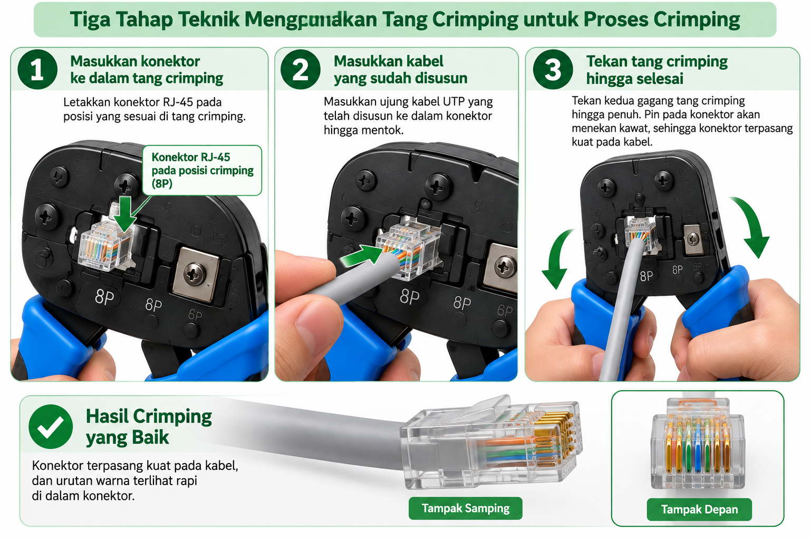

BAB 5 — Teknik Crimping Menggunakan Tang Crimping
Tujuan Pembelajaran Bab Ini
- Peserta didik mampu melakukan crimping konektor RJ-45 pada kabel UTP dengan benar.
- Peserta didik mampu menghasilkan satu kabel jaringan yang telah ter-crimp dengan menerapkan K3.
5.1 Inilah Praktik Utama TP 8
Setelah mempelajari dan berlatih teknik mengupas, meluruskan, menyusun warna, dan memasukkan kawat ke konektor pada bab-bab sebelumnya, kini tibalah saatnya kalian melakukan tahap yang paling dinanti: crimping, yaitu proses mengunci konektor RJ-45 pada kabel UTP menggunakan tang crimping, sehingga menghasilkan satu kabel jaringan yang telah selesai dipasangi konektor.
Bab ini adalah puncak dari seluruh rangkaian latihan TP 8. Namun ingatlah pesan penting dari bab-bab sebelumnya: JANGAN PERNAH melakukan crimping sebelum memeriksa susunan warna dan posisi kawat menggunakan panduan pada Bab 4.
5.2 Enam Langkah Melakukan Crimping
- Pegang konektor RJ-45 yang telah dimasukkan kawat sesuai panduan Bab 4, pastikan posisinya tidak berubah atau bergeser.
- Pastikan sekali lagi (pemeriksaan terakhir) menggunakan tabel empat pemeriksaan pada Bab 4 bagian 4.3.
- Masukkan konektor tersebut ke dalam slot crimper pada tang crimping, yaitu lubang khusus berbentuk RJ-45 pada tang.
- Pastikan konektor masuk sepenuhnya ke dalam slot, tidak miring, dan posisi kawat tidak bergeser saat dimasukkan.
- Genggam kedua pegangan tang crimping dengan mantap, lalu tekan dengan tenaga penuh dan merata sampai terasa atau terdengar bunyi "klik", yang menandakan pin telah menembus dan mengunci kawat.
- Lepaskan tekanan secara perlahan, keluarkan konektor dari slot tang, lalu lanjutkan ke pemeriksaan hasil pada Bab 6.

5.3 Menerapkan K3 Selama Proses Crimping
K3 Khusus Saat Crimping
- Pastikan tangan yang tidak memegang tang berada pada posisi aman, tidak berada di jalur pemotong atau di dekat konektor.
- Tekan tang dengan gerakan yang stabil, jangan menyentak atau menekan secara tiba-tiba dengan kekuatan berlebihan.
- Jangan meletakkan tang crimping dalam keadaan terbuka menghadap ke atas di tepi meja, karena berisiko terjatuh.
- Jika tang terasa sulit ditekan atau ada hambatan, jangan dipaksakan; periksa kembali posisi konektor, mungkin belum masuk dengan benar ke slot.
5.4 Mengapa Crimping Membutuhkan Tenaga yang Cukup?
Salah satu kesalahan pemula yang sering terjadi adalah menekan tang crimping dengan tenaga yang terlalu ringan, karena takut merusak konektor. Padahal, tang crimping dirancang khusus dengan mekanisme yang membutuhkan tekanan penuh agar pin dapat menembus lapisan pelindung kawat dan benar-benar mengunci dengan kuat.
Jika tekanan yang diberikan tidak cukup, pin mungkin hanya menyentuh permukaan kawat tanpa benar-benar menembusnya, sehingga sambungan listrik menjadi tidak stabil atau bahkan tidak terhubung sama sekali, meskipun secara kasat mata konektor terlihat sudah terpasang. Oleh karena itu, tekanlah dengan mantap dan penuh, bukan ragu-ragu, namun tetap dalam gerakan yang terkendali dan tidak menyentak.
5.5 Latihan Bertahap: dari Percobaan Menuju Produk Jadi
Karena tang crimping yang tersedia berjumlah 10 buah untuk 11 peserta didik, kalian akan bekerja secara berpasangan dan bergiliran. Gunakan kesempatan menunggu giliran untuk mengamati dan belajar dari cara kerja teman kalian, termasuk kesalahan yang mungkin terjadi, agar kalian dapat menghindarinya saat giliran kalian tiba.
- Percobaan pertama: fokus pada keberanian menekan tang dengan tenaga yang cukup, tanpa terlalu khawatir hasilnya sempurna.
- Percobaan kedua dan seterusnya: mulai perhatikan kerapian dan ketepatan posisi kawat sebelum crimping.
- Target akhir pertemuan ini: setiap peserta didik menghasilkan minimal satu kabel yang telah ter-crimp dengan baik, sesuai kriteria yang akan dipelajari pada Bab 6.
5.6 Kegiatan Peserta Didik — LKPD 5.1
Petunjuk LKPD 5.1
Lakukan proses crimping pada kabel latihan kalian, dari persiapan sampai selesai. Bandingkan kondisi kabel sebelum dan sesudah crimping.
| Kondisi Sebelum Crimping | Kondisi Sesudah Crimping | Apa yang Berhasil | Apa yang Perlu Diperbaiki |
|---|---|---|---|
Rangkuman Bab 5
- Crimping adalah proses mengunci konektor RJ-45 pada kabel UTP menggunakan tang crimping, terdiri dari enam langkah.
- Sebelum crimping, wajib dilakukan pemeriksaan terakhir menggunakan tabel empat pemeriksaan dari Bab 4.
- Proses crimping membutuhkan tekanan yang mantap dan penuh, bukan ragu-ragu, agar pin benar-benar menembus dan mengunci kawat.
- K3 tetap harus diterapkan selama proses crimping, termasuk posisi tangan dan cara menekan tang.
Latihan Soal Bab 5
- Sebutkan enam langkah melakukan crimping menggunakan tang crimping!
- Mengapa pemeriksaan terakhir harus dilakukan sebelum crimping, padahal sudah diperiksa pada Bab 4?
- Mengapa crimping membutuhkan tenaga yang cukup dan tidak boleh dilakukan dengan ragu-ragu?
- Sebutkan tiga penerapan K3 khusus selama proses crimping!
- Apa yang sebaiknya dilakukan apabila tang crimping terasa sulit ditekan atau ada hambatan?
Refleksi Pertemuan 5
- Bagaimana perasaan saya saat pertama kali berhasil melakukan crimping?
- Apa yang berhasil dari hasil crimping saya?
- Apa yang masih perlu saya perbaiki?